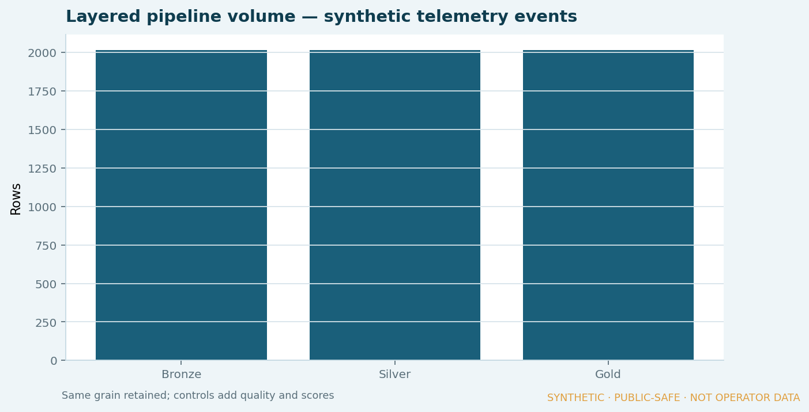
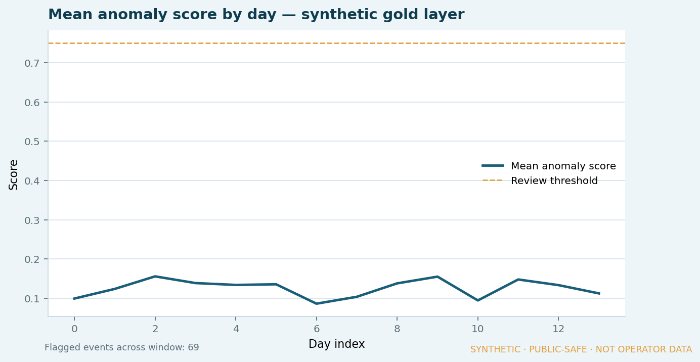
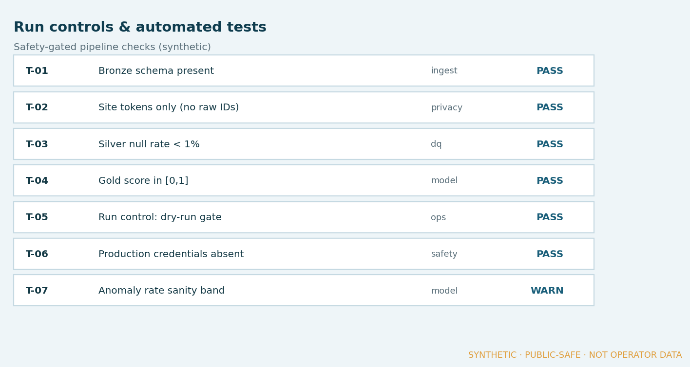

← Work · Engineering & Research
MSc research · Evidence published
Telecom operations anomaly detection
Engineering research into safe handling of operational telemetry: anonymisation, layered data, tests and run controls. Supports the analytics career as engineering depth — not as the primary market lane.

Business context
Operational networks generate high-volume telemetry. Useful detection work depends on data that can be handled safely and reproducibly.
The problem
Without clear extraction controls, anonymisation and testable pipelines, anomaly work is hard to defend and risky to share.
My role
Designed and implemented Python workflows with layered data, tests and explicit run controls as MSc engineering research.
Approach
- Safety-conscious data handling and anonymisation patterns (site tokens only).
- Layered datasets: bronze ingest → silver clean/DQ → gold anomaly scores.
- Automated tests and documented run controls, including a dry-run gate.
- Publish labelled stills from a synthetic dataset — not operator environments.
Architecture / model
See the layered flow above. Evidence below is pipeline behaviour (volumes, scores, tests) — not a management dashboard.
Business logic (in the stills)
- Layer volumes retained across bronze / silver / gold
- Mean anomaly score by day with a review threshold
- Silver DQ review flags
- Automated test and run-control board
Controls
- No raw operator IDs — invented site tokens only
- Schema, privacy, DQ and model tests recorded as Pass / Warn
- Dry-run gate and “production credentials absent” check
- Every visual watermarked as synthetic / public-safe
Result
Published synthetic layered evidence. Public repository link remains withheld until disclosure and governance are cleared.



Source tables (CSV):
What I am learning
How to keep detection work reviewable: privacy first, then layers, then scores — with tests that fail closed when safety gates are not met.
Public-disclosure note
No production credentials, access methods or identifiable operator environments are published here. Figures and site tokens are invented for portfolio evidence.